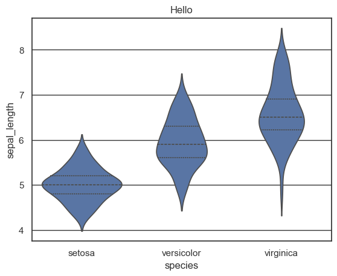
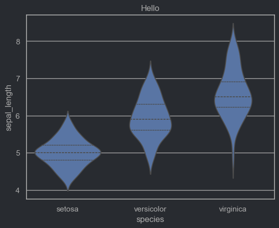

from quarto import theme_brand_seaborn
light_params = theme_brand_seaborn("light-brand.yml")
dark_params = theme_brand_seaborn("dark-brand.yml")seaborn
How to Draw a Violin Plot of the Iris Data Using Seaborn
Overview
Seaborn is a powerful Python visualization library based on Matplotlib that provides a high-level interface for drawing attractive statistical graphics. One of its features is the ability to easily create violin plots, which are excellent for visualizing the distribution and density of data. In this guide, we will demonstrate how to create a violin plot using the Seaborn library with the Iris dataset.
Code Implementation
Follow these simple steps to draw a violin plot using Seaborn:
Step-by-Step Code
Below is a complete example to create a violin plot for the Iris dataset using Seaborn:
In [1]:
In [2]:


Explanation
- Data Loading: We use Seaborn’s
load_datasetfunction to load the Iris dataset, which is included in Seaborn’s collection of sample datasets. - Creating the Violin Plot: The
violinplotfunction from Seaborn is used, where we specify thexparameter to be the species and theyparameter to be the sepal length. Theinner="quartile"option adds a box plot inside the violin plot to display the quartiles of the data, providing additional context. - Display Settings: The plot’s title is set for clarity, and the plot is displayed using
plt.show(), which renders the complete visualization.
Additional Note
Seaborn simplifies the process of creating violin plots significantly compared to manual methods with other libraries like Bokeh. It is especially useful for visualizations that require presenting the distribution alongside comparison groups without extensive configuration.